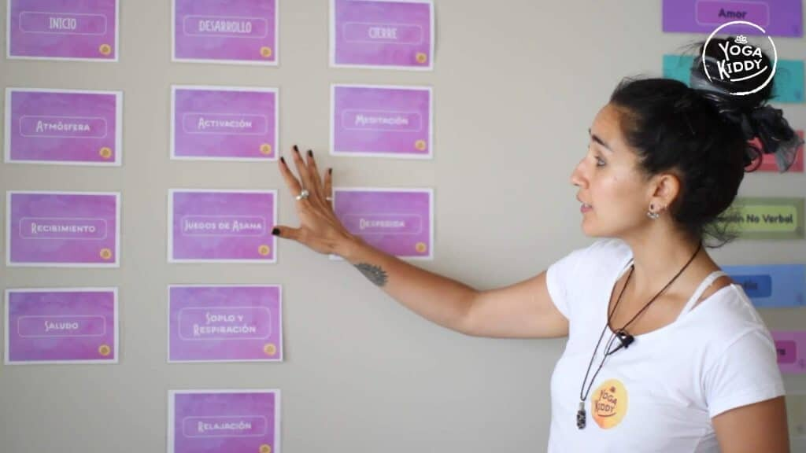

Para que una clase de yoga infantil tenga trascendencia, depende de varios factores, donde cada uno de ellos tienen una importancia particular y necesaria.
Además de todo el amor que deben sostener nuestras prácticas, la manera de estructurarlas, planificarlas y ejecutarlas resulta imprescindible que sea un proceso sistemático y acorde a nuestros objetivos.
Las características que construyen la forma de sostener nuestras prácticas de yoga para niños y niñas, hablan de nosotras/os mismos y sobre lo que nos interesa aportar a la infancia. Es por esto, la relevancia de la creación de una metodología que permita articular todas las acciones desde ahí y llevar a cabo una labor coherente, pertinente y organizada.
Una metodología determinada nos permite elaborar una estructura de clase, la cual tiene un orden en su ejecución, favoreciendo nuestro rol como facilitador(a) y lo más importante, brindar una experiencia integral para ellos y ellas.
La estructuración de la clase, nos permite planificar de forma más fluida, pudiendo contener al grupo bajo una mirada ya estudiada y creada de acuerdo a las necesidades de la infancia. Además esta organización nos abre la puerta a la improvisación, siendo esta un medio para flexibilizar nuestra relación con ellos y ellas, pero recordando que ella tiene una base clara y segura. Gracias a ella impactamos de manera muy positiva en los niños/as, ya que podemos brindar seguridad, facilitando la experiencia desde un lugar más respetuoso y amoroso, creando vínculos más seguros.
Es necesario que existan al menos tres ejes principales de organización dentro de toda estructura: inicio, desarrollo y final. Dentro de cada eje, situaremos momentos que buscan ofrecer dinámicas diversas pero con un mismo objetivo.
Es recomendado que dicha estructura tenga la capacidad de flexibilidad constante, pero es importante destacar que si estás comenzando el camino del yoga infantil, es favorable que la mantengas durante un tiempo para así poder interiorizarla, para más tarde ir haciendo las modificaciones que el contexto te exija. El tiempo es clave en una clase, por lo que esta propuesta nos ayuda a organizarlo de manera más asertiva.
Estructura Yogakiddy
Nos impulsa el deseo constante a contribuir de manera integral al proceso de desarrollo de niños y niñas, y esto nos invitó a crear nuestra propia metodología, la cual tiene pilares que atienden al ser en su totalidad.
La metodología Yogakiddy cuenta con una estructura de clase, la cual fue elaborada a partir de nuestra experiencia con la infancia, lo que nos ha permitido conocer necesidades reales, pudiendo responder de manera oportuna. Dicha organización busca atender al niño en unidad, es decir, en todos sus niveles: físico, mental, emocional y espiritual.
Cuenta con diversas partes, las cuales tienen objetivos en específico y que existen por si solas, pero la relevancia es mucho mayor cuando se fusionan entre ellas.
La integración de todas aquellas partes, nos permite ofrecer una experiencia holística, que nos entrega claridad de nuestras responsabilidades y objetivos. Esta fusión da paso a una mayor contención de grupo en relación a la manera de guiar las actividades, en cuanto a la disposición del tiempo y lo más importante, mantener el interés constante de quienes le dan vida a nuestra clase.
Para ello, hemos construido una estructura que tiene por objetivos:
- Propiciar ritos para ofrecer seguridad.
- Permitir el movimiento expresivo libre y espontáneo.
- Conocer asanas desde un enfoque lúdico-pedagógico.
- Ofrecer instancias de calma para sus mentes, cuerpos y espíritus.
- Acercarlos a la meditación, de manera referente a sus edades e intereses.
- Crear una atmósfera que los y las invite a valorar la experiencia del yoga infantil.
Si te interesa conocer nuestra metodología de abordaje con niños y niñas, te invitamos a conocernos y sumarte a esta red de colaboración para una infancia más feliz, sana, respetada y amada.